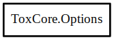

Options
Object Hierarchy:

Description:
[ Compact ]
public class Options
This struct contains all the startup options for Tox. You can either allocate this object yourself, and pass it to tox_options_default,
or call tox_options_new to get a new default options object.
Content:
Creation methods:
Methods:
Fields:
- public bool ipv6_enabled
The type of socket to create.
- public bool udp_enabled
Enable the use of UDP communication when available.
- public ProxyType proxy_type
Pass communications through a proxy.
- public string? proxy_host
The IP address or DNS name of the proxy to be used.
- public uint16 proxy_port
The port to use to connect to the proxy server.
- public uint16 start_port
The start port of the inclusive port range to attempt to use.
- public uint16 end_port
The end port of the inclusive port range to attempt to use.
- public uint16 tcp_port
The port to use for the TCP server (relay). If 0, the TCP server is
disabled.
- public SaveDataType savedata_type
The type of savedata to load from.
- public uint8[] savedata_data
The savedata.